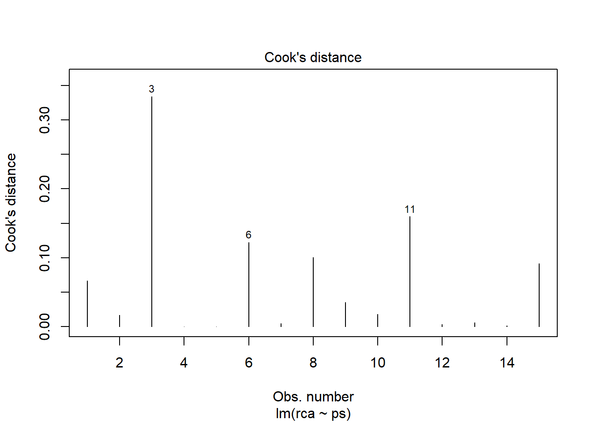

install.packages("readxl")MINICURSO CONNEPI 2024: Regressão Linear para pesquisa tecnológica com apoio do R
1 Apresentação
Este é uma material de apoio do Minicurso: Regressão Linear para pesquisa tecnológica com apoio do R ministrado no XIV Congresso Norte Nordeste de Pesquisa e Inovação (CONNEPI), realizado em Belém/PA, em agosto de 2024.
Além das breves explicações destinadas a complementar uma introdução ao modelo de regressão realizada em sala de aula, são disponibilizados os códigos em R e os dados utilizados.
O minicurso foi elaborado a partir das necessidades observadas nas atividades de pesquisa do Grupo de Estudos Aplicados em Gestão (GEAG), nas aulas das disciplinas Planejamento Estatístico e Experimental, do Mestrado em Engenharia de Materiais (PPGEMAT), de Estatística aplicada, na Engenharia de Materiais e de Métodos Quantitativos, ministrada nos cursos de Tecnologia em Gestão Pública, em Gestão Hospitalar e em Análise e Desenvolvimento de Sistemas do IFPA.
O modelo de regressão é certamente uma das técnicas estatísticas mais utilizadas em análise de dados, com amplas possibilidades de aplicação em desenvovimento de novas tecnologias e este minicurso é uma introdução gentil ao tema. Espero que aproveitem.
2 Por que regressão?
- Inovação tecnológica envolve propor novas soluções ou aprimoramentos resolver problemas.
- Um resultado de um processo ou propriedade de algo pode ser entedido como uma variável que pode ser explicada por outra ou por outras variáveis.
- Posso descrever ou estimar o resultado dessa relação?
- Como posso melhorar as propriedades de materiais ou de um sistema, conhecendo a sua relação com os principais fatores envolvidos?
- Como realizar os cálculos e gráficos dessas análise sem despesas?
3 O modelo de regressão
3.1 Definição do modelo
A regressão é uma técnica utilizada para explicar e modelar a relação entre uma variável y , denominada resposta ou variável dependente, e uma ou mais variáveis independentes, também denominadas fatores ou variáveis explicativas, x1,…,xk (Faraway, 2002).
\[y = f(x_1, x_2, \dots, x_k)\]
A variável dependente deve ser contínua, mas a(s) variável(is) independentes de podem ser contínuas, discretas ou categóricas.
A regressão pode ser utilizadas para três finalidades básicas:
- Descrição: descrever a estrutura geral de dados;
- Análise:Analisar os efeitos de variações nas variáveis independentes ou fatores sobre a variável dependente ou resposta; e
- Previsão: estimar valores da variável dependente com base nos valores das variáveis independentes.
A regressão busca explicar porque os valores de cada uma das observações de \(y\) são diferentes umas das outras com base na informação dos valores de \(x\) associados. O valor esperado de cada \(y\) para cada valor de \(x\), ou valor condicional de y, pode ser descrito inicialmente pelo seguinte modelo:
\[E(y|x)=\beta_0+\beta_1X + \epsilon\]
em que o intercepto \(\beta_0\) e ao coeficiente de inclinação \(\beta_i\) são constantes desconhecidas e \(\epsilon\) é uma compontente aleatória.
A Figura 1 (a) apresenta um conjunto de observações de uma variável dependente (y) em resposta a diferentes valores de uma variável independente (X). Na Figura 1 (b), regressão busca traçar uma reta que cruze as observações dos pares ordenados \((x,y)\) com o melhor ajuste, isto é, com a menor distância entre os pontos e \(\beta_0\) e \(\beta_1\) são, respectivamente os coeficientes lineares e de inclinação dessa reta.
Quando há somente uma variável explicativa, k=1, chama-se modelo de regressao simples.
\[y=\beta_0+\beta_1 X+ \epsilon\]
y é o valor da observado da variável dependente, \(\beta_0\) é intercepto ou coeficente linear, e \(\beta_i\) coeficiente de inclinação, \(\varepsilon_i\) é u termo aleatório normalmente distribuído com média zero e variância constante.
Quando há mais de uma varável explicativa, k>1, chama-se modelo de regressão múltipla.
\[E(y|x) = \beta_0 + \beta_1 X_1 + \beta_2 X_2 + \dots + \beta_k X_k+ \epsilon\]
\(X_k\) são as variáveis independentes, \(\beta_0\) é uma constante que representa o coeficiente linear ou intercepto do modelo, \(\beta_1,\dots,\beta_k\) são os parâmetros de declividade ou coeficientes angulares associados às variáveis independentes.
Os valores dos parâmetros \(\beta\) são desconhecidos, mas podem ser estimados a partir de dados amostrais, observados ou experimentais, de forma que os modelo estimado é o seguinte:
\[y_i = b_0 + b_1 X_1 + b_2 X_2 + \dots + b_k X_k+e_i\:,\:\: i=1,\dots,N\]
\(y_i\) é o valor da observado da variável dependente, i é o número da observação, N é o total de observações da amostra, \(X_k\) são as variáveis independentes, \(b_0\) é a estimativa do intercepto do modelo, \(b_1,\dots,b_k\) são as estimativas dos coeficientes angulares, \(e_i\) é o valor do termo aleatório ou resíduo.
3.2 Predição de valores
Uma vez de posse da estimativa de \(\beta\), o modelo permite predizer ou ajustar os valores da variável dependente contidos no vetor \(\hat{y}\), para os valores de \(X\):
\[ \hat{y}_i=b_0 + b_1 X_i\]
3.3 Os resíduos
O método dos MQO envolve encontrar \(\mathbf{b}\) que minimize a soma dos quadrados dos resíduos. O resíduo (\(e_i\)) pode ser definido como a diferença entre o valor observado (\(y_i\)) é aquele calculado pelo modelo, denominado valor ajustado ou previsto (\(\hat{y}\)), podendo se expresso como abaixo
\[e_i =y_i-\hat{y}_i\]
Os resíduos são ilustrados na Figura 2 e são estimativas dos valores do termo aleatório \(\epsilon\) os quais não são observáveis.
3.4 Teste dos parâmetros
Dois testes de hipóteses sobre os parâmatros do modelo podem ser realizados a partir de suas estimativas. Pode-se testar o intercepto é zero, conforme a formulação a seguir:
- \(H_0: \beta_0=0\)
- \(H_1: \beta_0\neq0\)
Pode-se avaliar se cada uma das variáveis independentes (\(X_k\)) são capazes de influenciar a variável dependente (\(y\)) Se não forem capazes o valor do seu respectivo coeficiente de inclinação será zero, conforme a formulação a seguir:
- \(H_0: \beta_k=0\)
- \(H_1: \beta_k\neq0\)
As decisões dos testes de hipóteses acima são baseadas no teste t, conforme o nível de significãncia adotado (geralmente \(\alpha=0,05\)) nos valores P associados a essa estatística. Rejeita-se a hipótese nula, caso o valor P seja inferior a 0,05.
4 Regressão no R
4.1 O que é o R?
O R é um ambiente computacional aberto, destinado á análise de dados, disponível gratuitamente na internet e que possui uma ampla comunidade de colaboração volutária. Aliado ao ambiente de desenvolvimento integrado(IDE) RStudio, também disponível gratuitamente, oferece uma interface amigável e integração com outros programas,como o Quarto, o que possibilita a geração de relatórios instantâneos em HyperText Markup Language (HTML), Portable Document Format (PDF) e Microsoft Word.
O programas podem ser baixados para instalaçao nos seguintes endereços.
Importante, destacar que o R é o software que realizada os cálculos e gráficos e o RStudio é uma interface, portanto esta não irá funcionar sem o R estar instalado.
Ao ser instalado o R traz um conjunto de pacotes básicos. Um pacote é um conjunto de funções que permitem realizar as operações necessárias. Todavia, um conjunto de pacotes adicionais para inúmeros propósitos que podem ser instalados.
A instalação de um pacote pode ser realizada por meio da função install.packages() com o nome do pacote desejado. Por exemplo, vamos instalar o pacote readxl que é útil para importar e exportar dados para Excel.
Após instalado, para que os seus recursos sejam ativados, é necessário carregá-lo com a função library().
library(readxl)Os recursos desse pacote adicional agora estão disponíveis para as atividades de análise.
Durante este minicurso são utilizados os seguintes pacotes adicionais:
- readxl (Wickham e Bryan, 2023)
- lmtest (Zeileis e Hothorn, 2002)
- car (Fox e Weisberg, 2019)
4.2 O diretório de trabalho
O Working directory ou diretório de trabalho, em português, é a pasta em que o R está salvando e lendo objetos. Logo é nesse diretório em que devem estar salvos os arquivos do seu projeto de análise.
A função getwd() exibe o diretório de trabalho atual.
getwd() # diretorio atualPara alterar o diretório, utilise a função setwd(), informando o caminho. No caminho. Certifique-se de não utilizar, no caminho, o padrão do windows que é ““, pois no R, o caminho é informado, usando”\” ou “/” .
setwd("meu\\caminho") # conf. diretório
setwd("meu/caminho") # conf. diretórioUma alternativa mais confortável para configurar o diretório, é o uso do Menu: Session/Setting Working Directory/Choose Directory.
4.3 Lendo e examinando dados no R
Vamos modelar os efeitos da proporção de substituição (ps) de agregados por resíduos de algum material sobre a resistência à compressão axial (rca) de um determinado compósito cimentício. Os dados estão na primeira aba, ex1_compressao, do arquivo do excel dadosConnepi.xlsx que deve está salvo no diretrório de trabalho. Para importar os dados, usa-se a função read_excel() do pacote readxl que já deve instalado no R porque não é um pacote básico.
install.packages("readxl")Carrega-se o pacote e os dados podem ser importados com a função read_excel() e salvos no objeto dados.
Os valores do objeto dados podem ser exibidos no console pelo seu nome. As colunas podem ser acessadas, com o uso dos cifrões. A estrutura dos dados pode ser exibida com a função str().
library(readxl)
dados <- read_excel("dadosConnepi.xlsx", sheet = "ex1_compressao")
dados# A tibble: 15 × 2
ps rca
<dbl> <dbl>
1 0 9.44
2 0 9.77
3 0 11.6
4 0 10.1
5 0 10.1
6 10 8.72
7 10 7.46
8 10 5.73
9 10 6.31
10 10 6.55
11 20 5.22
12 20 4.36
13 20 4.4
14 20 4.11
15 20 3.44dados$ps [1] 0 0 0 0 0 10 10 10 10 10 20 20 20 20 20str(dados)tibble [15 × 2] (S3: tbl_df/tbl/data.frame)
$ ps : num [1:15] 0 0 0 0 0 10 10 10 10 10 ...
$ rca: num [1:15] 9.44 9.77 11.56 10.07 10.13 ...Um gráfico pode ser produzido com o comando plot(). Os argumentos podem ser informados de duas maneiras. A primeira inserido os valores das colunas individualmente, eixo horizontal e vertical. A segunda na forma de fórmula e indicando o objeto com os dados, nesse caso não precisa usar os cifrões.
plot(dados$ps,dados$rca,
xlab = "Proporção de resíduos (%)",
ylab = "Resistência (MPa)")plot(rca~ps, data = dados,
xlab = "Proporção de resíduos (%)",
ylab = "Resistência (MPa)")
O ajuste ou estimação do modelo de regressão linear no R é realizado pela função lm(). Os argumentos devem ser inseridos na forma de fórmula. Os argumento (rca ~ ps, data = dados), informam que se deve estimar o modelo de rca “em função” de ps e que os valores estão armazanados no objeto dados.
mod <- lm(rca ~ ps, data = dados)
summary(mod)
Call:
lm(formula = rca ~ ps, data = dados)
Residuals:
Min 1Q Median 3Q Max
-1.42133 -0.62833 -0.02533 0.25067 1.56867
Coefficients:
Estimate Std. Error t value Pr(>|t|)
(Intercept) 10.09533 0.35828 28.18 4.85e-13 ***
ps -0.29440 0.02775 -10.61 9.03e-08 ***
---
Signif. codes: 0 '***' 0.001 '**' 0.01 '*' 0.05 '.' 0.1 ' ' 1
Residual standard error: 0.8776 on 13 degrees of freedom
Multiple R-squared: 0.8964, Adjusted R-squared: 0.8885
F-statistic: 112.5 on 1 and 13 DF, p-value: 9.031e-084.4 Predizendo valores no R
Os valores ajustados para o valores das variáveis independentes pode ser para os valores \(X\) da amostra e para outros valores. O valores ajustados da amostra já estão armazenados no objeto mod, sendo acessado com o cifrão:
mod$fitted.values 1 2 3 4 5 6 7 8
10.095333 10.095333 10.095333 10.095333 10.095333 7.151333 7.151333 7.151333
9 10 11 12 13 14 15
7.151333 7.151333 4.207333 4.207333 4.207333 4.207333 4.207333 Para outros valores de X, pode-se utilizar a função predict() que utiliza o modelo armazenado no objeto, mod neste exemplo, e o novos valores num objeto do tipo data frame.
# defina os novos valores
dadosnovos <- data.frame(ps=15)
# Use o modelo para predições
predict(mod, dadosnovos) 1
5.679333 dadosnovos <- data.frame(ps=c(15, 16, 17))
predict(mod, dadosnovos) 1 2 3
5.679333 5.384933 5.090533 5 Qualidade do ajuste
A qualidade do ajuste modelo é a avaliação da capacidade do modelo de regressão explicar as variações de valores da variável dependente, de fazer predições e quais variáveis ajudam nessa explicação. A seguir são descritas brevemente as medidas que permitem essas avaliações.
A estatística F Anova (F-statistic) mede o efeito conjunto das variáveis independentes (fatores) sobre a variável dependente (resposta). Testa a hipótese nula de que nenhuma das variáveis independentes é capaz de descrever o comportamento da variável dependente. Para que o modelo de regressão proposto seja significativo, a hipótese nula deve ser rejeitada, em geral, quando \(\text{Valor P} < \alpha = 0, 05\).
O Coeficiente de determinação (Multiple R-squared - \(R^2\)) mede a proporção da variação explicada pela regressão e seu valor varia de 0 a 1, quanto maior esse valor, maior poder explicativo do modelo.
No caso de regressão múltipla, o Coeficiente de determinação ajustado (Adjusted R-squared) mede a proporção da variação explicada pela regressão, mas penaliza o número de variáveis independentes, uma vez que modelos parcimoniosos são preferíveis por sua simplicidade, logo, o acréscimo de uma variável e da complexidade devem ser justificados por um aumento razoável no poder explicativo.
O Erro Padrão Residual , ou Residual Standard Error, também denominado Raiz do Erro Quadrático médio, ou Root Mean Squared Error (RMSE), mede o grau de dispersão em torno da linha de regressão e quanto menor o seu valor, melhor. No R, é calculado pela seguite Equação:
\[ RMSE = \sqrt{\frac{\sum_{i=1}^n (y_i-\hat{y}_i)^2}{n-k}} \]
onde RMSE é expressa na mesma unidade de y, n é o número de observações e k, o número de parâmetros a serem estimados, o demoninador indica o número de graus de liberdade. Importante ressaltar que, no cálculo do RSME, geralmente se dividem os desvios ao quadro por n, mas a divisão por \((n-k)\) permite a obtenção de um valor não viesado erro padrão do erro.
summary(mod)
Call:
lm(formula = rca ~ ps, data = dados)
Residuals:
Min 1Q Median 3Q Max
-1.42133 -0.62833 -0.02533 0.25067 1.56867
Coefficients:
Estimate Std. Error t value Pr(>|t|)
(Intercept) 10.09533 0.35828 28.18 4.85e-13 ***
ps -0.29440 0.02775 -10.61 9.03e-08 ***
---
Signif. codes: 0 '***' 0.001 '**' 0.01 '*' 0.05 '.' 0.1 ' ' 1
Residual standard error: 0.8776 on 13 degrees of freedom
Multiple R-squared: 0.8964, Adjusted R-squared: 0.8885
F-statistic: 112.5 on 1 and 13 DF, p-value: 9.031e-086 Pressupostos do Modelo de Regressão
6.1 Os pressupostos
Linearidade A relação entre as variáveis explicativas e a variável dependente é linear. A linearidade pode ser avaliada através da inspeção dos gráficos de dispersão ou de resíduos.
Homocedasticidade: A variância dos resíduos é constante para todos os valores de X. A dispersão dos resíduos deve se manter ao longo dos valores das variáveis independentes, como exibido na Figura 3 (a). Quando a dispersão, por exemplo, aumenta com os valores de X, como na Figura 3 (b) e ou se altera com algum padrão, como na Figura 3 (c), diz-se que o modelo apresenta heterocedasticidade, ou seja, a variância dos resíduos não é constante.
\[var(\varepsilon|X_1, X_2, \dots, X_k) = \sigma^2\]
- Independência dos erros: os valores de um erro (i) não influencia o valor de outro (j), expressa pelo valor nulo de qualquer par de covariância de erros aleatórios.
\[cov(\varepsilon_i,\varepsilon_j)=0 \; (i \neq j)\]
Isso implica que os valores de y também são estatisticamente independentes e visse-versa.
\[cov(\varepsilon_i,\varepsilon_j)=cov(y_i,y_j)=0 \; (i \neq j)\]
- Os erros seguem distribuição normal com média zero e variância constante.
\[\varepsilon_i \sim N(0, \sigma^2)\]
\[E(\varepsilon|X)=0\]
que implica em afirmar que
\[E(y|X)=\beta_0+\beta_1X_1+\dots+\beta_kX_k\]
- Não multicolinearidade perfeita: as variáveis explicativas são linearmente independentes, isto é, não há correlação perfeita entre elas. A correlação elevada entre as variáveis independentes dificulta a determinação do efeito exato de cada uma sobre a variável dependente.
| Pressuposto | Exame |
|---|---|
| Linearidade | Gráfico de dispersão dos resíduos em função dos valores ajustados |
| Homocedasticidade | Gráfico de dispersão dos resíduos em função dos valores ajustados, gráfico (Scale-Location), Teste de Breusch-Pagan |
| Normalidade zero dos resíduos | Gráfico de dispersão dos resíduos em função dos valores ajustados |
| Normalidade | QQ-plot e teste de Shapiro-Wilk |
| Independência dos resíduos | Gráfico dos resíduos e Coeficiente de Autocorrelação |
| Multicolinearidade | Fator de inflação de variância (VIF) e Tolerância |
6.2 Avaliação dos pressupostos
A avaliação dos pressupostos da regressão, na maior parte, é realizada por meio de exames dos resíduos na forma de gráficos e de testes estatísticos. No R, alguns exames podem ser aplicados diretamente ao objeto em que o modelo foi salvo, mas outros exigem que os valores dos resíduos sejam extraídos.
Os valores do modelo salvo em mod podem ser acessado com o uso do cifrão. Digite o nome do objeto acrescente o cifrão que uma lista de valores será apresentada. Nos comandos a seguir são extraídos os valores dos resíduos e os valores ajustados do modelo.
mod$residuals 1 2 3 4 5 6
-0.65533333 -0.32533333 1.46466667 -0.02533333 0.03466667 1.56866667
7 8 9 10 11 12
0.30866667 -1.42133333 -0.84133333 -0.60133333 1.01266667 0.15266667
13 14 15
0.19266667 -0.09733333 -0.76733333 mod$fitted.values 1 2 3 4 5 6 7 8
10.095333 10.095333 10.095333 10.095333 10.095333 7.151333 7.151333 7.151333
9 10 11 12 13 14 15
7.151333 7.151333 4.207333 4.207333 4.207333 4.207333 4.207333 A Figura 4 é um gráfico de dispersão de resíduos em função dos valores ajustados e permite o exame visual da linearidade do modelo da homocedasticidade. A linha horizontal foi traçada na altura da média dos resíduos.
plot(mod$fitted.values, mod$residuals)
abline(h = mean(mod$residuals), lty = 2, col = "red")A normalidade pode ser examinda por meio do gráfico quantil-quantil (Normal qqplot) e de um teste de aderência, aqui utilizaremos o teste de Shapiro-Wilk (Shapiro e Wilk, 1965).
O Normal Q-Q plot é utilizado para exame visual da normalidade das observações, podendo ser elaborado com as funções qqnorm() e qqline(), tendo como principal argumento os resíduos do modelo. Caso os dados sejam normalmente distribuídos os pontos devem se situar aleatoriamente próximos à reta.
O Normal Q-Q plot, na fig-qqplot, mostra que a maior parte dos resíduos está próximo da, no entanto, três valores se afastam mais, exigindo um exame formal para verificar se esse afastamento é grave.
qqnorm(mod$residuals, col = "red")
qqline(mod$residuals)Uma alternativa gráfica interessane é o QQ-plot gerado pelo comando qqPlot() do pacote car, o qual deve ter sido previamente instalado com o comando e carregado.
install.packages("car") # instalalibrary(car) # carregaNessa alternativa, um intervalo de confiança é traçada em torno da reta para demarcar o limite de devios toleráveis, assim, as observações de dados normalmente distribuídos devem se mater dentro do intervalo.
Apesar da maioria dos dados se manterem dentro dos intervao de confiança, as observações 3 e 6 ultrapassaram os limites. Seria interessante a realização de um teste formal.
qqPlot(mod$res, ylab = "Resíduos")[1] 6 3O teste de Shapiro-Wilk (Shapiro e Wilk, 1965) é um teste formal de distribuição de normalidade que testa as seguites hipóteses:
- \(H_0\): Os dados seguem distribuição normal.
- \(H_1\): Os dados NÃO seguem distribuição normal.
Considerando um nível de significância de 0,05, rejeita-se a hipótese nula se \(p<0,05\), caso contrário aceita-se a afirmação de normalidade. Então o que se espera é que \(p>0,05\), indicando normalidade e continuidade da análise sem a violação desse pressuposto.
A função shapiro.test() exibe os valores da estatística de teste (W), que é uma qui-quadrado, e o valor P.
shapiro.test(mod$residuals)
Shapiro-Wilk normality test
data: mod$residuals
W = 0.94907, p-value = 0.51A análise da homecedasticidade pode ser realizado por inspeção visual do gráfico de dispersão dos resíduos em função dos valores ajustados, na Figura 4, pelo gráfico Scale-Location (a ser apresentado adiante) e com o teste de Breusch-Pagan (Breusch e Pagan, 1979).
O teste de Breusch-Pagan (Breusch e Pagan, 1979) avalia as seguites hipóteses:
- \(H_0\): Variância é constante.
- \(H_1\): Variância NÃO é constante.
Considerando um nível de significância de 0,05, rejeita-se a hipótese nula se \(p<0,05\), indicando a presença de heterocedasticidade, caso contrário, aceita-se a afirmação de homocedasticidade.
A função bptest() do pacote lmtest efetua o teste de Breusch-Pagan, mas antes o pacote precisa ser instalado por meio da função install.packages()
install.packages("lmtest")No resultado do função, BP corresponde à estística de teste e o seu correspondente valor P = 0.7031, por ser superior 0,05, é não é significante, de forma que não se pode rejeitar a hipótese nula e indica homocedasticidade.
library(lmtest)
bptest(mod)
studentized Breusch-Pagan test
data: mod
BP = 0.14522, df = 1, p-value = 0.7031Um resurso muito ágil e amplo de avaliar os presssupostos do modelo são os gráficos de diagnóstico do modelo acionados pela conjugação da função plot() e o objeto com as dados do modelo (Corrêa et al., 2021)
Trata-se de 4 gráficos que são acionados e apresentados a medida que pressiona ENTER no console.
- Resíduos vs valores ajustados;
- QQplot dos resíduos;
- Scale-location;
- Resíduos vs alavangem (Residuals vs Leverage)
Todavia, é mais confortável, dividir-se a janela gráfica e quatro partes e se apresentar todos juntos para um exame mais rápido. A divisão da janela em 2 linhas e 2 colunas é relizada com o comando par(mfrow = c(2,2)). Em seguida, digita-se o comando para geração dos 4 gráficos de diagnósticos do modelo, conforme apresentados na Figura 7.
par(mfrow = c(2,2))
plot(mod)O primeiro é o gráfico de resíduos vs valores ajustados, já elaborado anteriomente na Figura 4, sendo útil para o exame da linearidade e da homocedasticidade, mas com o acréscimo de uma linha central para facilitar a análise da dispersão das observações. No caso de linearidade, a linha vermelha será razoavelmente horizontal, mas caso reste algum padrão não linear nos resíduos, a linha vermelha refletirá tal padrão.
O gráfico não revela padrões restantes nos resíduos e a linha vermelha, apesar do leve vale em X=7, é razoavelmente horizontal, de forma que não há indícios de violação da linearidade. O três números destacados (3, 6 e 8) indicam três maiores resíduos, mas não são necessariamente atípicos (outliers).
O segundo gráfico é o QQplot permite o exame de normalidade e já foi elaborado na Figura 5, chamando atenção para três valores que se afastam da reta.
O terceiro gráfico é o scale-location que é a dispersão dos raízes dos resíduos padronizados em função dos valores ajustados sendo útil para o exame da homocedasticidade. Em caso de homocedasticidade, a linha vermelha será razoavelmente horizontal e os pontos devem se dispersar de forma similar ao longo dos valores ajustados.
O gráfico revela alguma suspeita de dispersão ligeiramente maior no valor 10, mas a linha vermelha não exibe tendência, portanto, é apesar não não haver indícios de dispersão heterôgenea grave dos resíduos, é prudente incluir um teste formal na análise, o qual já foi realizado pelo teste de Breusch-Pagan anteriormente.
O quarto é o gráfico de Resíduos vs alavangem (Residuals vs Leverage) destinado à identificação de valores atípicos (outliers). Os valores limites para que determinadas observações devam ser avaliadas como possível outlier são as distâncias de Cook que mensuram a influência que as observaçoes exercem sobre a estimativa do modelo. Os valores de corte são apresentadas como linhas tracejadas no interior do gráfico e a intepretação dos seus valores podem são apresentadas na Tabela abaixo.
| D | Interpretação |
|---|---|
| \(D<0,5\) | Não são é uma observação atípica |
| \(0,5< D \leq 1\) | Geralmente útil estudar a influência de tais observações |
| \(D>1\) | Deve-se avaliar a sua exclusão da amostra. |
O Residuals vs Leverage na Figura 7 não exibe observações ultrapassando alguma linha de corte da distância de Cook, aliás apenas parte uma linha de D=0,5 aparace no canto superior direito do gráfico, de modo que não há indícios de valores atípicos na amostra.
Um gráfico com os valores individuais da distância de Cook podem ser exibidos num único gráfico. Para retornar para uma janela sem divisão basta digitar par(mfrow = c(1,1)) e o próximo gráfico será gerado em janela única.
par(mfrow = c(1,1))No comando de gráficos de diagnósticos, identifique que deve ser exibido somente o quarto gráfico.
plot(mod, which = 4)
7 O modelo final
Após constatação de que os pressupostos do da regressão linear não foram violados, o modelo que descreve os efeitos da proporção de substituição (ps) de agregados por resíduos de algum material sobre a resistência à compressão axial (rca) de um compósito cimentício é o seguinte:
\[ \hat{y_i}= 10,0953 - 0,29440 X_i \]
Condiderando que se trata de uma regressão simples, pode-se elaborar um gráfico para publicação com os seguinte código:
plot(rca ~ ps,
data=dados, pch = 19, col = "blue",
xlab = "Proporção de resíduos (%)",
ylab = "Resistência à Compressão")
abline(mod, col = "red", lwd = 1.5)8 Praticando
Suponha que desejamos estimar os custos indiretos fabrição de uma fábrica de doces. Os dados mensais dos custos indiretos de fabricação, custos de embalagens, produção em toneladas e despesas de divulgação estão na aba ex2_fabrica do arquivo do excel dadosConnepi.xlsx e cujas seis primeiras linhas são exibidas na Tabela 1.
| data | ci | embalagem | toneladas | divulgacao |
|---|---|---|---|---|
| 2015-01-01 | 218501.0 | 2790.90 | 42.3 | 253.81 |
| 2015-02-01 | 209982.3 | 2866.50 | 29.7 | 877.03 |
| 2015-03-01 | 228401.9 | 2573.55 | 53.1 | 575.83 |
| 2015-04-01 | 176657.2 | 1584.45 | 54.0 | 909.86 |
| 2015-05-01 | 207152.2 | 2178.75 | 53.1 | 1178.07 |
| 2015-06-01 | 249873.8 | 3082.80 | 55.8 | 1025.11 |
Com base nas informaçoes forncecidas, faça o que se pede:
- Importe dos dados
- Ajuste o modelo de regressão linear dos ci em função da embalagem, toneladas e divulgação.
- Avalie o ajuste do modelo
- Examine os pressupostos de linearidade , homocedasticidade e normalidade e examine a presença de valores atípicos avalia a significância do efeito das variáveis independentes.
- Decida qual o modelo descritivo.
SCRIPT DE RESOLUÇÃO SUGERIDO
fabrica <- read_excel("dadosConnepi.xlsx",
sheet = "ex2_fabrica")
mod2 <- lm(ci ~ embalagem + toneladas + divulgacao, data = fabrica)
options(scipen = 999) # Desativa notação cient.
summary(mod2)
par(mfrow = c(2,2))
plot(mod2)
par(mfrow = c(1,1))
shapiro.test(mod$residuals)
library(lmtest) # carrega pacote
bptest(mod)
mod3 <- lm(ci ~ embalagem + toneladas, data = fabrica)
par(mfrow = c(2,2))
plot(mod3)
par(mfrow = c(1,1))9 Multicolinearidade
Ocorre multicolinearidade num modelo de regressão quando duas ou mais variáveis independentes são altamente correlacionadas de modo que não proporcionam informação individualizada e independente e, consequentemente, os valores das estimativas e de seus respecitivos valores P deixam de ser confiáveis.
O Fator de Inflação da Variância (VIF) é uma medida de multicolinearidade frequentemente utilizada e pode ser calculada para cada uma das variáveis independentes (\(X_j\)).
\[ VIF = \frac{1}{1-R_j^2}, \quad j=1,\dots,k \]
onde \(R_j^2\) é o coeficiente de regressão de uma regresssão de \(X_j\) como variável dependente em função das demais do modelo e \(k\) é o número de variáveis indenpendentes.
O valor de VIF de uma variável pode ser intepretado da seguite maneira:
- VIF = 1: Ausência de correlação
- VIF > 5 ou 10: Multicolinearidade severa.
Alguns autores adotam com regra para multicolinearidade severa quando VIF > 5 (Sheather, 2009), outros quando VIF>10 (Chatterjee e Hadi, 2015; Gujarati, 2004).
No R, o VIF pode ser calculado com a função vif() do pacote car.
library(car)
mod3 <- lm(ci ~ embalagem + toneladas, data = fabrica)
vif(mod3)embalagem toneladas
1.000879 1.000879 10 Trabalhos com regressão
Aqui alguns trabalhos que utilizam regressão e R realizados pelo Grupo de Estudos Avançados em Gestão:
Políticas e práticas de gestão de pessoas e intenção de rotatividade: um estudo no Instituto Federal do Pará (Brasil) (Guerra, Mattos e Corrêa, 2020)- Regressão utilizada para avaliar os efeitos de políticas de recursos humanos sobre a intenção de rotatitividade de servidores públicos
Mechanical properties and statistical analysis of polyester composite reinforced with miriti fibers braided using crochet technique (Freires et al., 2024) - Regressão utilizanda para dados experimentais obtidos de experimentos fatoriais completos.
Utilização do Ambiente R na assistência ao método de superfície de resposta para modelagem e otimização da secagem de sementes de urucum (Corrêa et al., 2021) - Demonstração do uso da regressão como parte de técnicas de otimização em planejamento experimental.
Referências
BREUSCH, T. S.; PAGAN, A. R. A simple test for heteroscedasticity and random coefficient variation. Econometrica: Journal of the econometric society, p. 1287–1294, 1979.
CHATTERJEE, S.; HADI, A. S. Regression analysis by example. 5. ed. Cairo: John Wiley & Sons, 2015.
CORRÊA, A. C. et al. Utilização do Ambiente R na assistência ao método de superfı́cie de resposta para modelagem e otimização da secagem de sementes de urucum. Em: FARIA, L. J. G. DE; ANDRADE, E. L. (Eds.). Engenharia de produtos naturais: planejamento, experimentação, obtenção de produtos e purificação. Guajurá: Cientı́fica Digital, 2021. p. 84–100.
FARAWAY, J. J. Practical regression and ANOVA using R. Bath, United Kingdom: University of Bath, 2002.
FOX, J.; WEISBERG, S. An R Companion to Applied Regression. 2019.
FREIRES, A. M. et al. Mechanical properties and statistical analysis of polyester composite reinforced with miriti fibers braided using crochet technique. Journal of Materials Research and Technology, v. 28, p. 4392–4400, 2024.
GUERRA, M. H. T. DA S.; MATTOS, C. A. C.; CORRÊA, A. DE C. Polı́ticas e práticas de gestão de pessoas e intenção de rotatividade: um estudo no Instituto Federal do Pará (Brasil). Revista de Carreiras e Pessoas, v. 10, n. 3, 2020.
GUJARATI, D. N. Basic econometrics. 4. ed. New Yok: McGraw-Hill Inc, 2004.
SHAPIRO, S. S.; WILK, M. B. An analysis of variance test for normality (complete samples). Biometrika, v. 52, n. 3-4, p. 591–611, 1965.
SHEATHER, S. A Modern Approach to Regression with R. New Yok: Springer Science &Business Media, 2009.
WICKHAM, H.; BRYAN, J. readxl: Read Excel Files. 2023.
ZEILEIS, A.; HOTHORN, T. Diagnostic Checking in Regression Relationships. v. 2, 2002.